Capítulo 2
INDÚSTRIA TÊXTIL
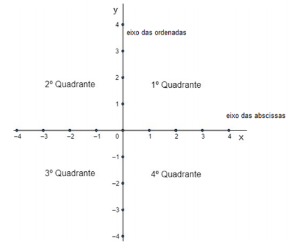Na confecção de tecidos, as fibras têxteis são divididas em dois grandes grupos: as fibras naturais que se caracterizam por serem retiradas prontas da natureza, como por exemplo, o algodão e a seda; e as fibras não naturais, que são obtidas através de processos industriais que moldam os polímeros em forma de filamentos.
 As fibras vegetais são compostas por celulose
natural, por isso também são chamadas de fibras celulósicas naturais. São derivadas de uma
grande variedade de sementes, dos caules e das folhas das plantas. Alguns exemplos de fibras
vegetais são: algodão, linho, juta e o rami.
As fibras vegetais são compostas por celulose
natural, por isso também são chamadas de fibras celulósicas naturais. São derivadas de uma
grande variedade de sementes, dos caules e das folhas das plantas. Alguns exemplos de fibras
vegetais são: algodão, linho, juta e o rami.
 De todas as fibras vegetais, algodão é a mais
importante.
A explicação para esta performance do algodão no
mercado é na verdade bastante simples, primeiramente
porque o algodão continua sendo a fibra têxtil preferida a
ser utilizada em
vestuário que
possui contato
direto com a pele
do corpo, pois comparativamente às fibras artificiais e
sintéticas, sua principal vantagem é o conforto dos
artigos confeccionados.
De todas as fibras vegetais, algodão é a mais
importante.
A explicação para esta performance do algodão no
mercado é na verdade bastante simples, primeiramente
porque o algodão continua sendo a fibra têxtil preferida a
ser utilizada em
vestuário que
possui contato
direto com a pele
do corpo, pois comparativamente às fibras artificiais e
sintéticas, sua principal vantagem é o conforto dos
artigos confeccionados.
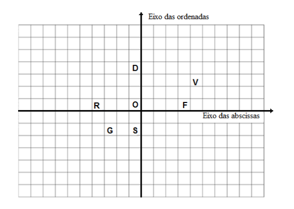As fibras animais também são conhecidas como fibras proteicas por possuírem, na sua estrutura química básica a composição de aminoácidos. Todas as fibras proteicas contêm os elementos carbono, hidrogênio, oxigênio e nitrogênio em sua composição. Em cada fibra proteica estes elementos são combinados em diferentes quantidades e em diferentes formas moleculares. Como resultado, as propriedades de cada fibra tendem a serem consequentemente muito diferentes umas das outras, conferindo aos tecidos diversas propriedades, cores, texturas, etc.
Após a confecção dos tecidos e ao transformá-los em peças de vestuário, é necessário elaborar etiquetas que informem sua composição. São etiquetas destinadas ao ramo de confecção de roupas e acessórios, tendo por finalidade identificar os produtos e dados técnicos.
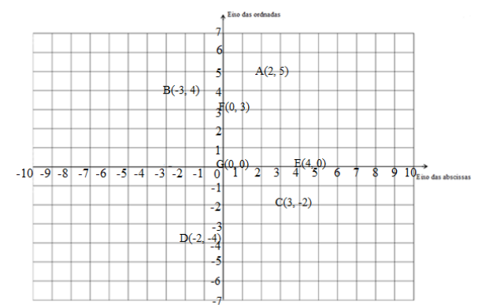As etiquetas de tecido também informam dados da fabricação como nome, tamanho, país de origem, instrução de lavagem e os cuidados de conservação deixando as etiquetas de tecido personalizadas e apropriadas para uso. São de diferentes tipos e tecidos: bordadas, estampadas, nylon resinado, cetim e emborrachados e possuem modelos para gola de roupas, lateral, barra, estilos, bandeirinha, clip, dobra entre outras. Suas especificações garantem a qualidade do produto e, para isso, devem estar de acordo com as normas do Inmetro.
As etiquetas de tecidos possuem especificações que são de grande importância para garantir a qualidade do produto, bem como garantir ao produtor / importador que estão de acordo com as normas do Inmetro.
Nas diferentes fases de produção, na indústria têxtil, é necessário que se tenha conhecimentos a respeito de proporção e números fracionários tanto para determinar diversas propriedades dos tecidos, quanto para elaborar as etiquetas para sua comercialização.
Que números são utilizados nas etiquetas para representar as matérias primas que compõem os tecidos?
Caro aluno, Ao longo deste capítulo, você vai explorar temas relacionados aos números fracionários, suas diferentes representações e como são utilizados. As atividades a seguir vão auxiliá-lo a responder à questão proposta no início do capítulo.
(RE) CONSTRUINDO CONHECIMENTOOs números fracionários são aqueles que representam uma ou mais partes de um todo. Assim, quando dividimos um objeto em um determinado número de partes, cada conjunto dessas partes é um número fracionário.
Uma representação dos números fracionários é feita por meio de frações, que são o quociente entre a parte do objeto dividido pelo total de partes do objeto.
A ideia de fracionar está associada a “quebrar” ou “dividir em partes”.
RELEMBRANDO A HISTÓRIA:A ORIGEM DOS NÚMEROS FRACIONÁRIOS
Acredita-se que a origem dos números fracionários deve-se aos egípcios, habitantes das margens do rio Nilo. Uma vez por ano, as águas do Nilo subiam e inundavam grandes áreas de terra, demarcando os limites das propriedades daqueles que moravam próximos às suas margens. Era necessário, então, que, após baixarem as águas, novos limites fossem demarcados. Nesse processo, a unidade de medida adotada, na maior parte das vezes, não cabia um número inteiro de vezes no comprimento dos lados do terreno, o que forçou a criação de um novo tipo de número que representasse um pedaço do inteiro. Surgia, então, o número fracionário.
A utilização das frações pelos egípcios aparece em um papiro escrito por Ahmes entre os anos de 2000 e 1600 antes de Crist, chamado papiro de Ahmes. Nele, aparece uma tabela para a decomposição de certas frações em somas de frações unitárias, usando um sinal oval alongado como numerador e, como denominador, os símbolos normalmente, para representar inteiros.

OS TERMOS DE UMA FRAÇÃO SÃO O NUMERADOR E DENOMINADOR.
Para ler uma fração, você deve ler o numerador e, em seguida, o denominador, que recebe nomes especiais:
1) Frações com denominadores de 2 a 9 2) Frações com o denominador que é uma potência de base 10
PARA SABER MAIS...
2) Frações com o denominador que é uma potência de base 10
PARA SABER MAIS...
As potências de base 10 são, talvez, as potências mais importantes, pois são muito usadas no estudo de outras ciências, como é o caso da Física.
Veja o que acontece quando se opera com a base 10:
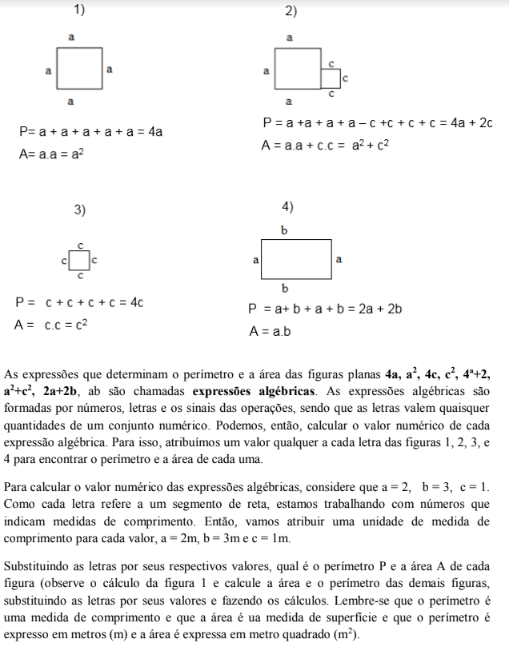As potências de base 10 são formadas pelo algarismo 1 seguido de zeros na quantidade do número do expoente. Para representar a potência de 1025, escreve-se o número 1 seguido de vinte e cinco zeros. Portanto, a potência 10n é formada pelo algarismo 1 seguido de n-vezes o algarismo 0 (zero).
3) Frações com denominadores maiores do que dez: 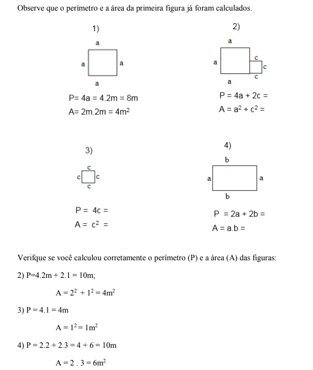As frações são classificadas como:

As frações impróprias podem ser transformadas em números mistos, que são compostos por uma parte inteira e uma parte fracionária.

As frações aparentes equivalem a inteiros.:
 Frações Equivalentes
Frações Equivalentes
Uma sequência de frações equivalentes a uma determinada fração é denominada Classe de Equivalência da referida fração.
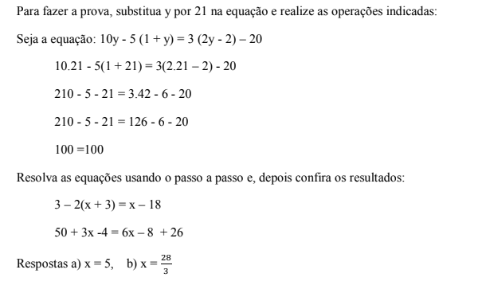 PARA ENTENDER MAIS...Acesse o vídeo clicando no link a seguir:
Na indústria têxtil, quando a peça do vestuário é
finalizada, faz-se necessário elaborar etiquetas
para informar ao consumidor qual a proporção
ou a porcentagem de cada fibra que compõe o
tecido. Observe os exemplos: 
Nas etiquetas 1 e 2, você percebe que cada uma estabelece uma proporção das fibras que compõem o tecido de uma peça.

Você já pensou sobre isso?
O gráfico de setores, também chamado de gráfico de pizza, é um tipo de gráfico muito utilizado para representar porcentagens. Para representar dados em gráficos deste tipo, é necessário que os valores estejam em porcentagem.
No gráfico de setores, cada parte colorida representa uma fração do todo.
No exemplo a seguir, está representado tem um gráfico de setor que indica a quantidade de cada fibra que compõe o tecido de uma peça de vestuário. Cada uma das partes pintadas de cores diferentes é um setor.
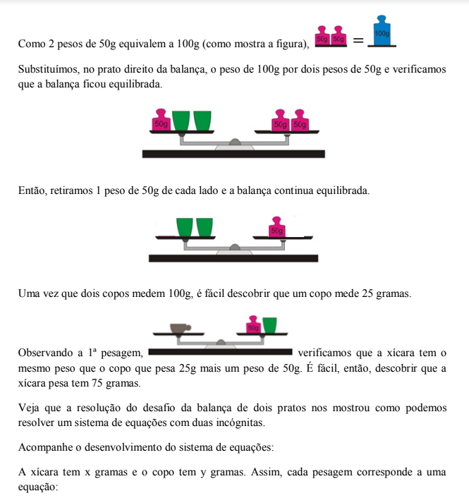Cada setor representa uma porcentagem que é a quantidade de cada uma das fibras que compõem o tecido. Somando as porcentagens de cada fibra (25% + 25% + 5% + 45%) temos o total de fibras da peça que é 100%. Na legenda, observa-se que, no tecido a que se refere o gráfico tem a mesma quantidade de viscose e lycra e o algodão é a fibra que predomina enquanto a quantidade de elastano é a menor.
Na indústria têxtil, um dos procedimentos realizados ao confeccionar uma peça de roupa é fazer o molde. Observe os desenhos:
Para fazer um molde, via de regra, é necessário conhecer ângulos. Mas o que é um ângulo?
Ângulo é uma figura geométrica formada por duas semirretas de mesma origem. Um giro também nos dá a ideia de ângulo.

Observe os desenhos a seguir e verifique a classificação dos ângulos, considerando o ângulo reto como o de um quarto de volta e o raso como o de meia volta.
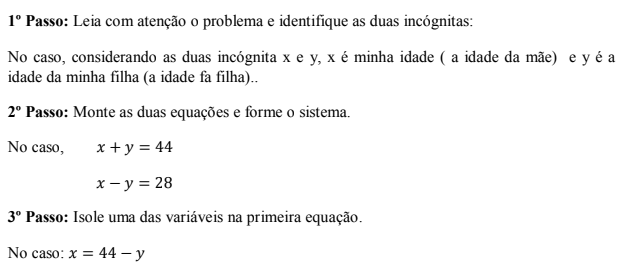Uma das unidades de medida de ângulos é o grau. O instrumento utilizado para medir a abertura do ângulo em graus é o transferidor.
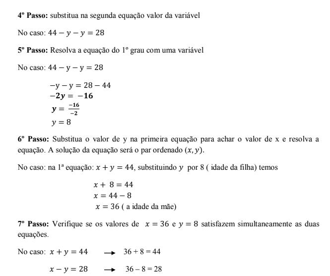 FAZENDO CÁLCULOS COM NÚMEROS FRACIONÁRIOSADIÇÃO E SUBTRAÇÃO DE FRAÇÕES
Na adição e subtração de frações temos dois casos que devem ser considerados:

FRAÇÕES COM DENOMINADORES DIFERENTES:
Para calcular a soma ou subtração de duas frações com denominadores diferentes, encontramos frações equivalentes às iniciais, com um mesmo denominador, e depois somamos ou subtraímos essas frações. Exemplo:
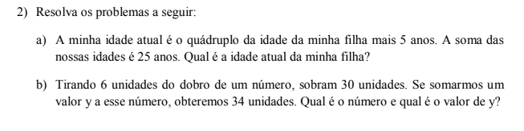 PARA SABER MAIS...Podemos concluir, então, que, para achar uma fração equivalente a outra, multiplica-se o numerador e o denominador da fração pelo mesmo número.

 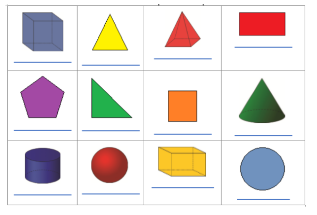
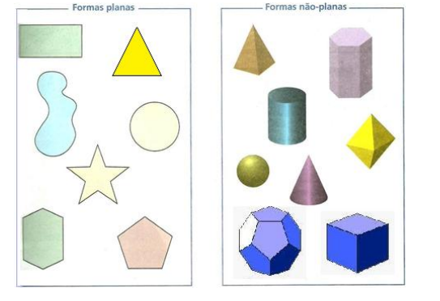
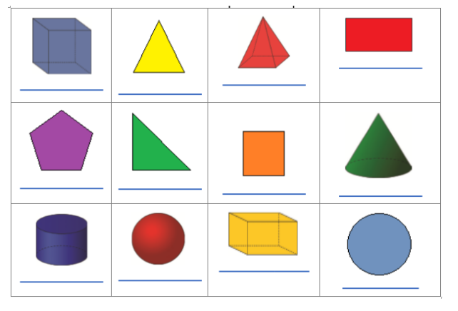
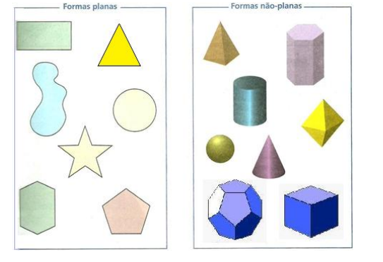
O QUE APRENDI
Neste capítulo, associado ao contexto da Indústria têxtil que usa inúmeros conceitos e procedimentos de Matemática em toda a linha de produção, estdamos um pouco sobre os números fracionários. Aprendemos a ler, classificar, somar e subtrair frações homogêneas (que têm o mesmo denominador) e heterogêneas (que têm denominadores diferentes). Para somair e subtrair frações heterogênas aprendemos a encontrar frações equivalentes. Explorando um pouco mais o tema, trabalhamos com os gráficos de setores, usando procentagens para expressar quantidades e trabalhamos com noções de ângulos.